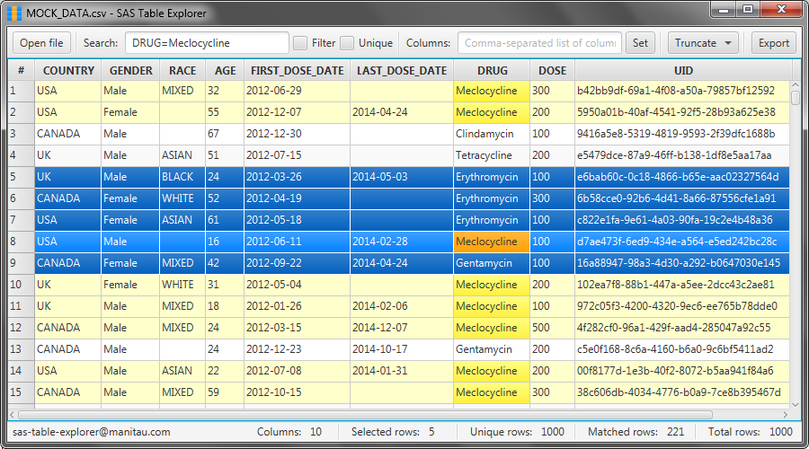

About
SAS Table Explorer is a lightweight viewer for files in SAS7BDAT and CSV formats.
This desktop application is just a reader, but not an editor of the SAS files.
It provides ability to read SAS7BDAT files or export data to CSV without any additional SAS software
installed.

Features
- Open files in SAS7BDAT and CSV formats
- Real-time search over the dataset
- Search using wildcard patterns
- Search by specific columns
- Show only specific set of columns
- Highlight matched rows
- Filter matched rows
- Sorting
- Truncate options
- Count total, matched, selected and unique rows
- Cross-platform (Windows, Linux, Mac OS X)
- Minimalistic flat design
- Ultra small size (less than 100KB)
Controls
- Open file
- Open .sas7bdat or .csv file
- Search
- Input search expression (autocomplete option is available here via Ctrl-Space)
- Columns
- Input comma-separated names of columns to display (autocomplete option is available here via Ctrl-Space)
- Filter
- Show only matched rows
- Unique
- Show only unique rows
- Truncate view
- Truncate dataset to the current dataset (keep only highlighted or filtered rows, forget rest columns and rows)
- Truncate selection
- Truncate dataset to currently selected rows
- Export
- Export current dataset to .csv file
Hotkeys
- Alt+S focus to "Search" input
- Alt+C focus to "Columns" input
- Ctrl+Space autocomplete column name
- Alt+F toggle "Filter" mode
- Alt+U toggle "Unique" mode
- Alt+O show "Open file" dialog
- Alt+E show "Export table data" dialog
- Alt+T focus to "Truncate" menu
Search wildcards
- ? match any single character
- * match any string (including the empty string)
Wildcard characters can be anywhere in the search string, e.g:
- word* starts with "word"
- *word ends with "word"
- *word* contains "word"
Search flags
- ~ enable case-insensitive search
- ! inverse match
Flag characters should be at the leading positions in the string, e.g:
- !word not equals to "word"
- ~word* starts with "Word" or "word"
- ~!*word* not contains "Word" or "word", or "wOrD"
Setup
SAS Table Explorer is written in Java. It can run on either Windows, Linux, or Mac OS X.
The only requirement for using this application is to have Java version 1.8 or higher installed. It doesn't require any SAS software. Just download and unzip application archive.
On Windows it is possible to register SAS Table Explorer as a default program to open SAS7BDAT and CSV files via shell script sas-table-explorer-setup.cmd.
Run application
- Via double click on sas-table-explorer.jar file
- Via command
java -jar sas-table-explorer.jar
- or
java -jar sas-table-explorer.jar fileToOpen.sas7bdat
- Via double click on .sas7bdat or .csv file (if the application was registered as a default program for these extensions)
Search examples
| Search string | Match result |
|---|---|
| For "simple search" use a string or pattern to search | |
| *berry | Match all rows with berries (e.g.: Blueberry, Strawberry, etc.) |
| For "columns search" use comma-separated pairs of columns and patterns | |
| CMSCAT=*THERAPY | Match all medications with category name ending with "THERAPY" (e.g.:CHEMOTHERAPY, RADIOTHERAPY and HORMONAL THERAPY) |
| Pairs with different columns are joined with a logical AND | |
| COLUMN1=VALUE1, COLUMN2=VALUE2, COLUMN3=VALUE3 | Match all rows where (COLUMN1=VALUE1 AND COLUMN2=VALUE2 AND COLUMN3=VALUE3) |
| SEX=Male, COUNTRY=USA, DEGREE=Academic | Match all men from USA who have an Academic degree |
| AGE=6?, AGE=7? | Match all patients aged 60-70 years old (from 60 to 79) |
| Pairs with same columns are joined with a logical OR | |
| COLUMN1=VALUE1, COLUMN1=VALUE2, COLUMN2=VALUE3 | Match all rows where ((COLUMN1=VALUE1 OR COLUMN1=VALUE2) AND COLUMN2=VALUE3) |
| SEX=Male, COUNTRY=USA, COUNTRY=Canada, DEGREE=Bachelor, DEGREE=Master | Match all men from USA or Canada who have a Bachelor or Master degree |
| Use ! to inverse match, and ~ to enable case-insensitive search | |
| COUNTRY=!USA | Match all patients not from USA |
| COUNTRY=!USA, GENDER=~MaLe | Match all men not from USA |
SAS7BDAT
SAS7BDAT is a SAS proprietary binary format for storing tabular data. SAS Institute has not published the internal format of .sas7bdat files. However some smart people made research of this format. For example, Matt Shotwell who reverse-engineered and described "SAS7BDAT Database Binary Format" or guys from GGA Software Services who have implemented "Parso Java library".
Contacts
For questions, feature requests or technical support related to this application you can contact xantorohara@gmail.com

SAS Table Explorer binary by Xantorohara is licensed under
a
Creative Commons Attribution-NonCommercial-NoDerivatives 4.0 International License.
Version 1.0.5.
Published 2015-01-10.
Updated 2015-10-04.